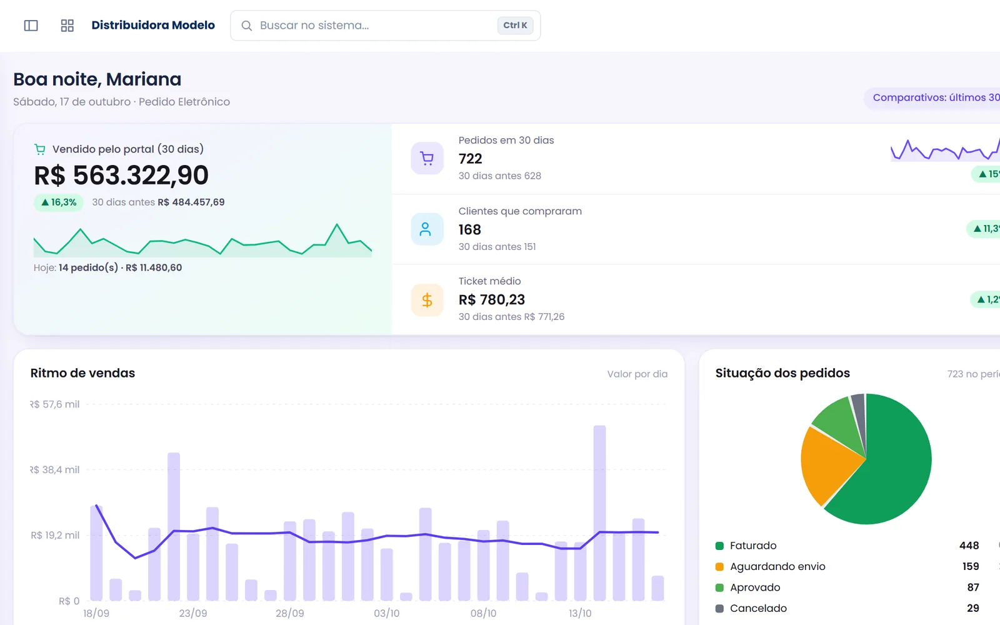

Pedido Eletrônico
Digitalize o pedido B2B em uma jornada por cliente, catálogo, preço, estoque e condição comercial.
Conhecer Pedido →A Epiper pode ser adotada por etapas. A empresa escolhe a prioridade inicial e amplia produtos, integrações, automações e recursos conforme a maturidade da operação.
Sem reconstruir o que já funciona.
Nem toda empresa precisa ativar tudo de uma vez. O desenho modular permite priorizar impacto e controlar a adoção.
Digitalize o pedido B2B em uma jornada por cliente, catálogo, preço, estoque e condição comercial.
Conhecer Pedido →Organize atendimento, carteira, agenda, CRM, metas e criação de pedido para a equipe interna.
Conhecer Televendas →Nem toda operação precisa ativar tudo no primeiro momento. Uma estratégia modular permite entregar valor mais cedo, estabilizar o fluxo principal e ampliar recursos conforme as prioridades ficam mais claras.
Pedido Eletrônico pode ser a prioridade quando o objetivo é criar um canal B2B mais organizado.
ExemploTelevendas pode entrar primeiro quando o gargalo está na produtividade e no contexto da equipe interna.
ExemploA evolução funciona melhor quando cada fase tem objetivo, escopo e resultado esperado. Assim o próximo módulo entra sobre uma base já validada.

Funcionalidade, integração e processo precisam caminhar juntos. Estes são os pontos que mais influenciam a qualidade do projeto e a adoção da equipe.
Mesmo quando a implantação ocorre em fases, arquitetura de integração, dados e permissões devem considerar a evolução futura para evitar retrabalho desnecessário.
A empresa pode validar valor em uma etapa menor e ampliar a plataforma quando o processo estiver maduro e a equipe preparada.
Podemos identificar o melhor ponto de partida e desenhar quais módulos fazem sentido agora e quais podem ficar para uma próxima etapa.
Uma plataforma modular para distribuidoras permite começar com o Pedido Eletrônico e depois ampliar para o Televendas, em uma implantação por etapas sobre a mesma base. Cada módulo se soma ao anterior sem refazer a integração com o ERP.